telecommande
🎛️ Mode Boutons

Mode Trackpad
🔢 Mode Keypad
Play
Pause
Volume +
Volume -
Sensibilité souris :
1.0
Déplace ton doigt ici
✏️ Modifier le Keypad
📚 Ajouter une commande
📓 Ouvrir Notion
🔇 Couper le micro Zoom
⏱️ Démarrer Pomodoro
💾 Accéder à Google Drive
📸 Faire une capture d’écran
🎧 Lancer playlist de focus
😎 Envoyer emoji au prof